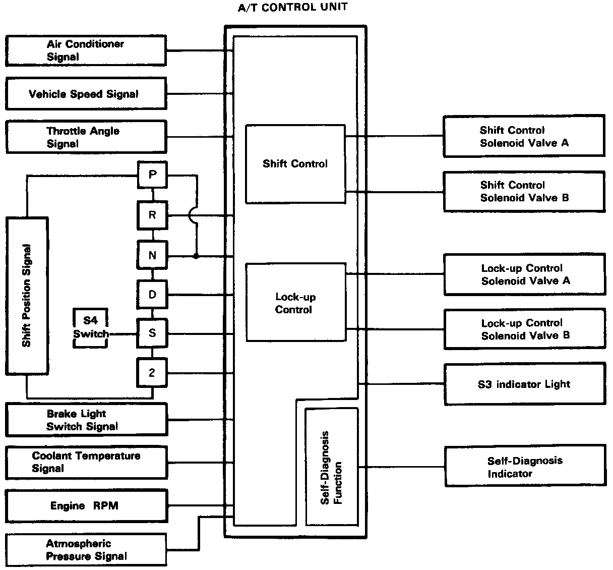
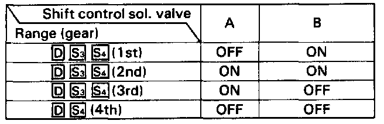
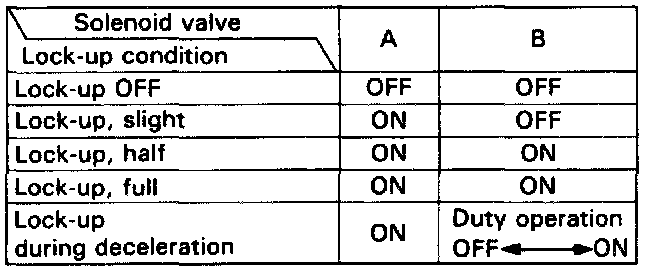
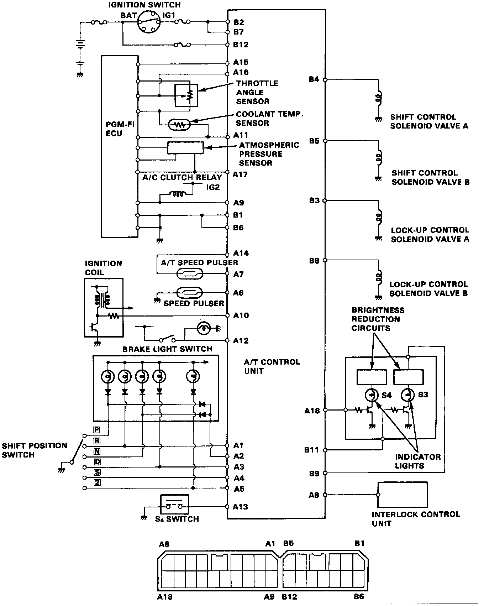

Transmission Control Systems: Description and Operation

Electronic Control System
Electronic Control System
The electronic control system consists of the A/T control unit, sensors, and 4 solenoid valves. Shifting and lock-up are electronically controlled for comfortable driving under all conditions.
The A/T control unit is below the dash to the left of the steering column.

Getting a signal from each sensor, the A/T control unit detects the appropriate gear shifting and activates shift control solenoid valves A and/or B.
The combination of driving signals to shift control solenoid valves A and B is shown in the table below.

From sensor input signals, the A/T control unit detects whether to turn the lock-up ON or OFF and activates lock-up control solenoid valve A and/or B accordingly.
The combination of driving signals to lock-up control solenoid valves A and B is shown in the table below.

Circuit Diagram Terminal Location